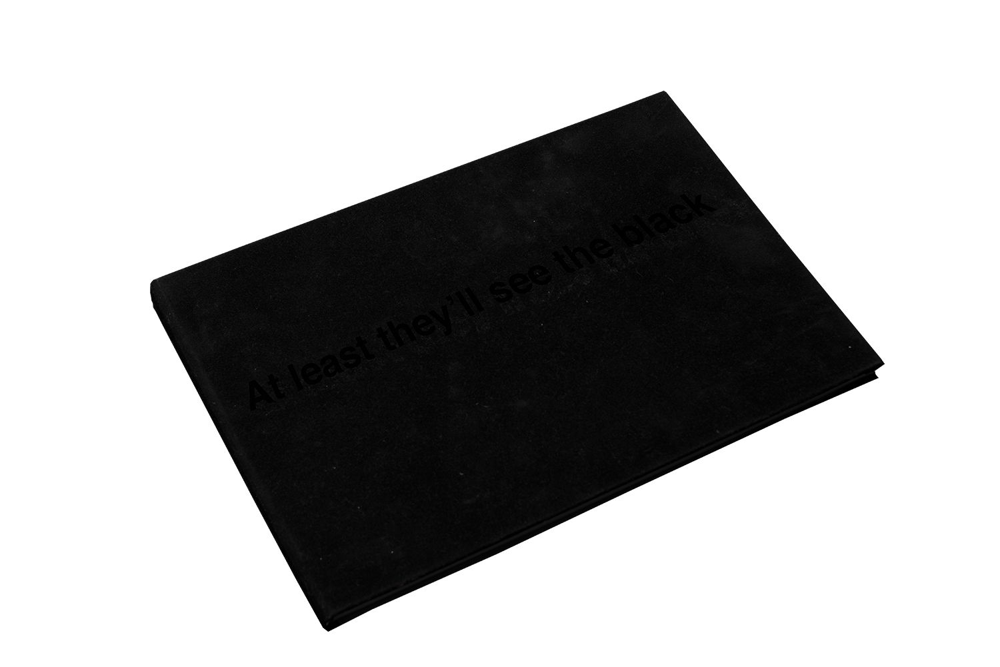
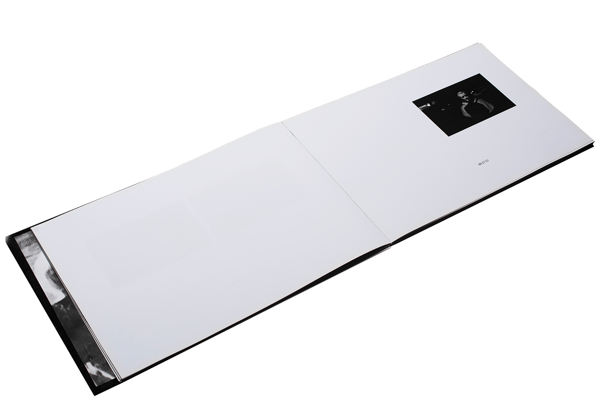
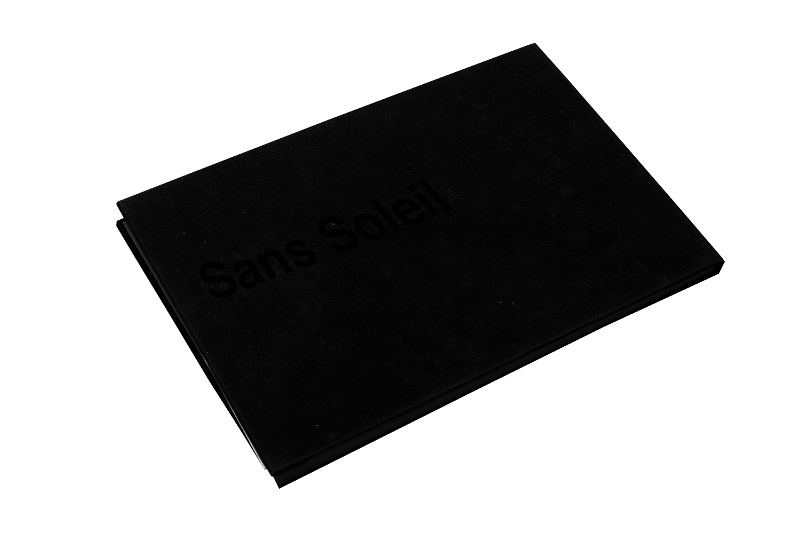

Indexing
An indexing of Chris Marker's 1986 experimental film Sans Soleil. Here, the film is catalogued chronologically according to Sergei Eisenstein's Soviet Montage Theory, where each still is positioned on the page according to the strategy used by Marker. Swiss bound.
An indexing of Chris Marker's 1986 experimental film Sans Soleil. Here, the film is catalogued chronologically according to Sergei Eisenstein's Soviet Montage Theory, where each still is positioned on the page according to the strategy used by Marker. Swiss bound.


